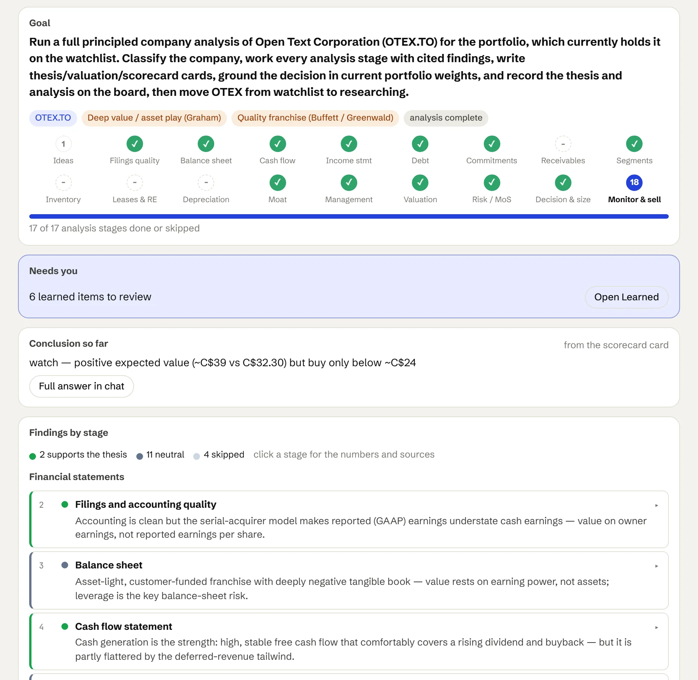
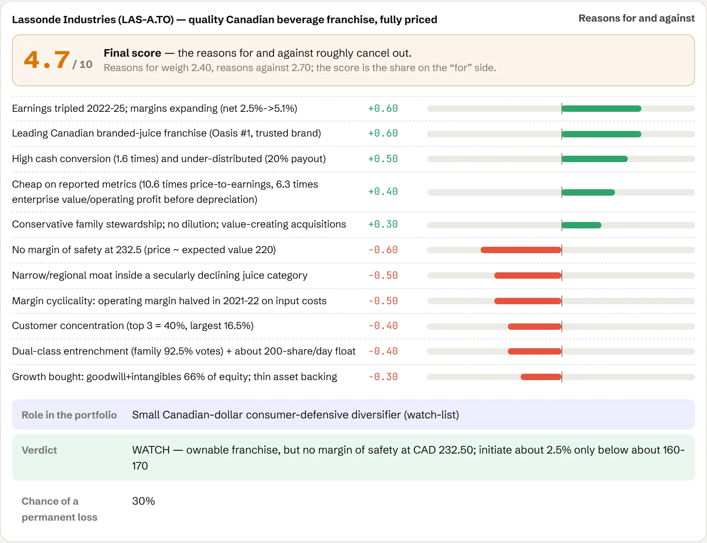
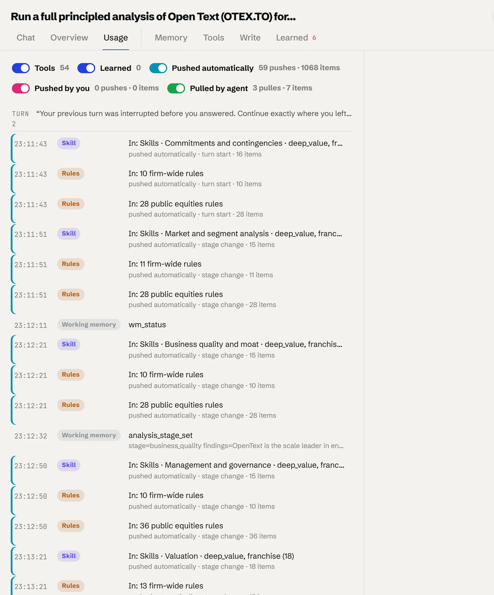
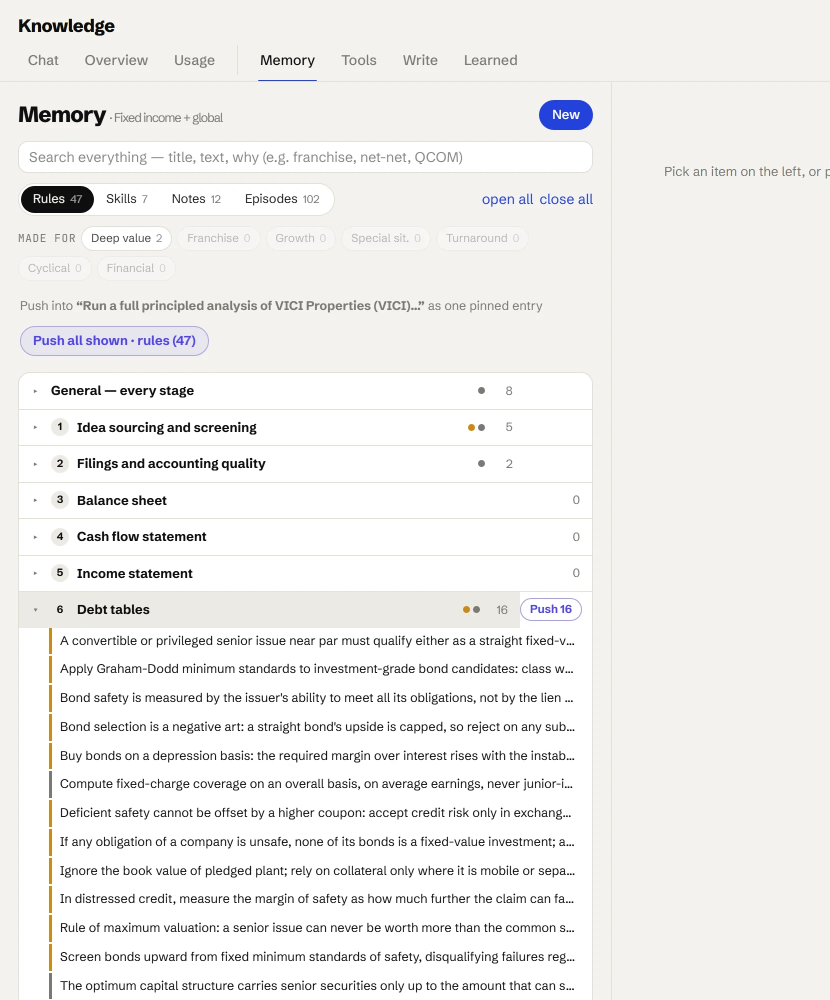
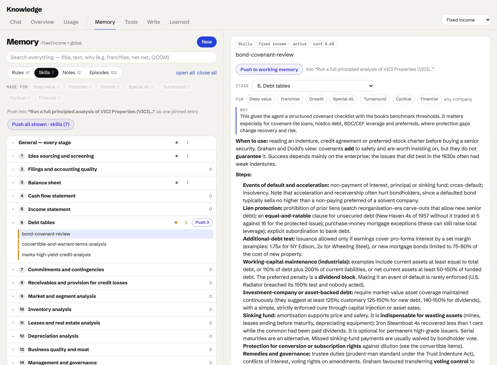
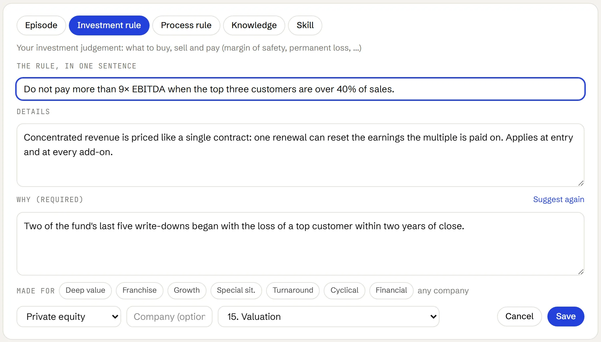
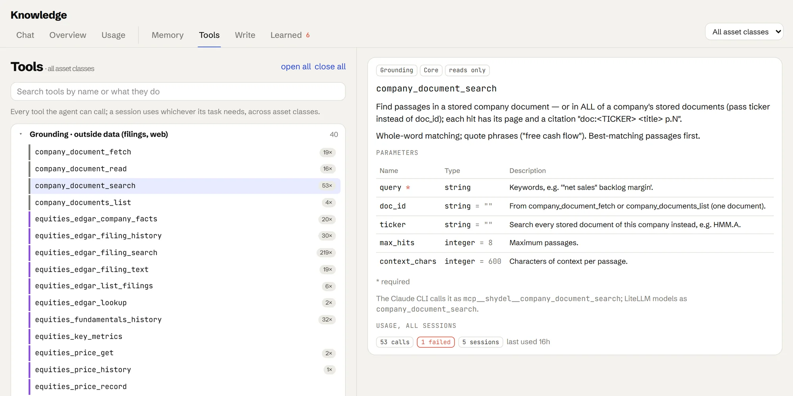
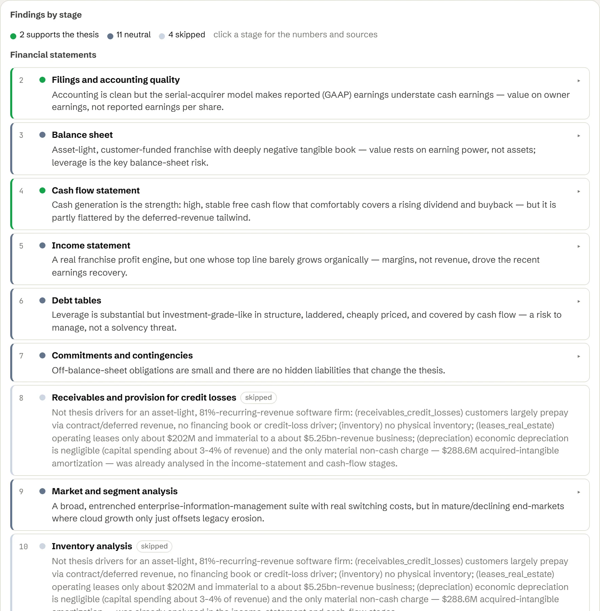

An analyst trained on your framework.
Eighteen ordered stages on every public company, from the filings to the decision. Your firm's rules at each stage; every number cited to its filing.
The first stage picks the playbook. The scorecard weighs it your way.
The first stage classifies the company: deep value, franchise, growth, special situation, turnaround, cyclical or financial. From then on only that playbook's rules are pushed.
No pass or fail. Each reason for and against is weighted, price first, then return on capital, into a score out of ten, a verdict and the chance of a permanent loss.
Below: the agent's Open Text analysis. Click a stage for its finding.
Run a full principled company analysis of Open Text Corporation (OTEX.TO) for the portfolio, which currently holds it on the watchlist. Classify the company, work every analysis stage with cited findings, write thesis/valuation/scorecard cards, ground the decision in current portfolio weights, and record the thesis and analysis on the board, then move OTEX from watchlist to researching.
Open Text (OTEX.TO) — quality franchise, cheap on cash, but levered with no organic growth and no margin of safety yetReasons for and against
What the agent brings to each stage.
At each stage the agent gets the rules and skills for that stage and that playbook. Click a skill for what it does.
Nothing changes the agent's behaviour until you approve it.
How memory works →∗Every stage
1Idea sourcing and screening
2Filings and accounting quality
3Balance sheet
4Cash flow statement
5Income statement
6Debt tables
9Market and segment analysis
12Depreciation analysis
13Business quality and moat
14Management and governance
15Valuation
16Risk and margin of safety
17Decision, sizing and portfolio fit
18Monitoring and selling
What it looks like in the Shydel Agent.
An equity, from the first filing to the scorecard.

Every stage, written up and cited.
The goal, the stage track and a cited finding for each stage.

Scored the way your firm scores.
Reasons for and against, a score out of ten, a role, a verdict and an entry price.

Your rules, pushed at every stage.
What was pushed, what the agent asked for, and every tool it called.
Banks and insurers, read on book value.
Banks, insurers and holding companies, valued on book value, NAV and return on equity, with capital and reserves read in the debt stage.
A financial is classified twice: as a financial, and as what kind.
A financial is classified twice: as a financial, and as what kind, such as a deep-value holding company or a franchise underwriter. Both playbooks apply at every stage.
Non-SEC filers are read from their own annual reports, cited by page. Below: the agent's E-L Financial analysis.
Run a full principled company analysis of E-L Financial Corporation Limited (ELF.TO), a TSX-listed Canadian insurance-and-investment holding company on the watchlist, and decide portfolio fit.
E-L Financial (ELF.TO) — deep-value discount-to-NAV compounderReasons for and against
What the agent brings to each stage.
The financial playbook: book value, NAV, capital and reserves. Click a skill for what it does.
Every correction on a bank or insurer becomes a candidate rule.
How memory works →1Idea sourcing and screening
3Balance sheet
4Cash flow statement
5Income statement
7Commitments and contingencies
8Receivables and provision for credit losses
9Market and segment analysis
What it looks like in the Shydel Agent.
Banks and insurers in their own lane, with the financial playbook.

A holding company, read on net asset value.
What the assets are worth, the discount, the verdict and the entry price.

Book value, capital and reserves, stage by stage.
NAV, capital, reserves and leverage, stage by stage.

Two playbooks at once.
Two playbooks, one scorecard.
The return is fixed. The risk isn't.
For a bond the agent starts with the downside: coverage, seniority, collateral, covenants, and what you recover if the issuer fails.
The same stages, read the way a lender reads them.
The return is known; the loss isn't. So the stages are read lender-first: coverage in a bad year, every claim ahead of yours, and the cushion beneath it.
Hurdle rates are pulled live from government curves. The ten-year in the issuer's currency is the yield to beat.
The cards below are illustrative. Click a stage to see what it does for a bond.
Illustrative · Run a full principled analysis of a senior secured issuer for the fixed income lane: classify the issuer, work every stage with cited findings, write thesis, valuation and scorecard cards, and record them on the board.
Illustrative · a senior secured bond, scored in the agent's format with the standard weightsReasons for and against
What the agent brings to each stage.
Credit rules and skills, kept at the debt stage. Click a skill for what it does.
Your credit committee's standards become rules here.
How memory works →1Idea sourcing and screening
6Debt tables
What it looks like in the Shydel Agent.
Same board, its own lane, its own credit rules.

Owned, weighed against the whole book.
Bonds, funds and cash, each weighed against the whole book.

Credit rules, kept at the debt stage.
Scoped to fixed income, the debt stage opens onto the credit rules.

A credit skill, opened.
A written procedure: events of default, liens, debt tests, sinking funds.
From data room to exit.
The data room, read like filings: quality of earnings, the debt structure, the plan and the exit, cited to the page and weighed against the fund.
The data room instead of EDGAR. The same eighteen stages after that.
Returns come from earnings growth, debt paydown and the exit multiple. The agent tests every add-back and stresses the debt the plan relies on.
The cards below are illustrative. Click a stage to see what it does for a deal.
Illustrative · Run a full principled analysis of a mid-market buyout for the private equity lane: test the quality of earnings, work every stage with cited findings, write thesis, valuation and scorecard cards, and record them on the board.
Illustrative · a mid-market buyout, scored in the agent's format with the standard weightsReasons for and against
What the agent brings to each stage.
Deal skills: earnings quality, management, channel checks. Click a skill for what it does.
Seeded with your committee's criteria, memos and post-mortems.
How memory works →4Cash flow statement
5Income statement
9Market and segment analysis
10Inventory analysis
14Management and governance
15Valuation
18Monitoring and selling
What it looks like in the Shydel Agent.
Same stages and scorecard. The playbook is your fund's.

Write your fund's rules in.
Write a rule, give the why, tag the stage. It's pushed at the next deal.

Read the data room.
Fetch, search and read the data room, cited to the page.

Every stage, written up with its sources.
A cited finding for every stage.
Real estate is a portfolio. Run it like one.
REITs get their own lane and rules. Leases have their own stage, return on capital is measured on the property, and each asset is weighed against your mix.
REITs on the same board, read on property terms.
Property counts in the capital base, AFFO is the cash earnings, and stage eleven reads the leases: term, escalators, expiries and tenants.
Below: the agent's VICI Properties analysis. Click a stage for its finding.
Run a full principled analysis of VICI Properties (VICI) for the portfolio: classify the company, work every analysis stage with cited findings, write thesis, valuation and scorecard cards, ground the decision in current portfolio weights, and record the thesis and analysis on the board.
VICI Properties — experiential/gaming triple-net REIT franchiseReasons for and against
What the agent brings to each stage.
Property skills: leases as debt, reproduction cost, maintenance spending. Click a skill for what it does.
Your REIT underwriting standards become rules here.
How memory works →3Balance sheet
9Market and segment analysis
11Leases and real estate analysis
12Depreciation analysis
15Valuation
What it looks like in the Shydel Agent.
A REIT, analysed on property terms.

The answer, in property terms.
Buildings, leases, AFFO, tenant risk and the verdict.

The lease stage, written up.
Term, escalators, cross-default and occupancy. Stages that don't apply are skipped with the reason.

The key numbers, on the property.
Key numbers with the property in the capital base.